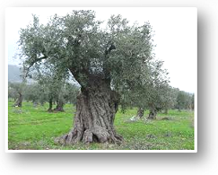
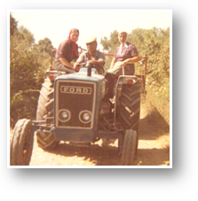

I was born and raised on a farm in Amalias Elias, Peloponnisos, Greece. Our farm was self-sufficient as far as food was concerned. We had our own meat, cheese, vegetables and dozens of kinds of fruit. During the winter months, we would eat all kinds of nuts and seeds as well. It was hard work to run a farm like this, but those good days remain close to my heart.
Some mornings, my Mom would take her homemade bread and cover it in olive oil and then sprinkle it with sugar. On cold days, she would use the olive oil to fry honey puffs, pouring honey and nuts on top. Olive oil was the only oil in my home land and we used it for all of our cooking needs.
During the first two of each November, Mom would handpick olives to cure for eating; these were special olives like Kalamata. She would put them in clay containers with fresh water and salt to cure them. We’d end up with enough olives for a year, with even extra to give away to friends. Soon, the temperatures would begin to drop and the rain would come; it would become a rush to get the rest of the olives off the trees before they fell to the ground and were not usable.
As we picked the olives, the trees needed to be pruned with hand saws. That was a lot of work but thanks to better tools today, that type of work has gotten easier. One year, after having been gone for 25 years, I returned home at harvest time to help my family pick the olives (Koroneiki – yellow in color) that are used to make olive oil. We’d form teams of five and work on the trees while my father would say that olive trees are a blessing from God. The satisfaction of the harvest was priceless and I was reminded of the work that went into being a farmer.
Today, Greece is struggling economically. Many people are leaving the cities to return to the country to take the opportunity to cultivate their land. It is a lot of work to harvest olives and make olive oil. I know many of these families and a few years ago, decided to help them by selling their olive oil here in America. Knowing them means I can guarantee where the olive oil comes from and how fresh and rich it is.
Once upon a time my grandfather would say, “A home which has its own olive oil, bread and wine is a rich home because that is all you really need.”
For a long time, I did not understand what my grandfather meant by those words. But now, I understand. Using my olive oil and vinegar on a fresh salad with a glass of wine is all I need to feel at home … and complete.
I have now been bringing my olive oil to America from my homeland for 30 years. I have tried olive oils in stores here and there is no comparison to the fruity, buttery and peppery taste of my own oil. I encourage you to try it for yourself! You will see there is nothing else like it.